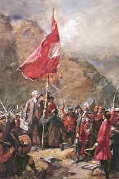

The Standard on the Braes o' Mar
L'étendard de Braemar
by Alexander Laing (1787 -1857)
Tune - Mélodie (pentatonic)Variant
"The Braes of Mar"
from Stewart Robertson's "Athole Collection" - New set, 1884
Sequenced by Christian Souchon

The Raising of the Standard at Glenfinnan, 19 August 1745' by W. Skeoch Cumming

To the tune:
The song
"The Standard on the Braes of Mar"
, which may have been, at least partly, inspired by
"The Auld Stuarts are back again"
was composed to the old tune "The Braes of Mar" by
Alexander Laing
(1787 - 1857), the "Brechin poet", and published in Robert Archibald Smith's "Scottish Minstrel", Vol. III, page 70, in 1821.
Like its model its refers to the raising of the Chevalier's Standard at Casteltoun of Braemar by the Earl of Mar, John Erskine on 6th September 1715.
Concerning the tune, A. Laing writes:
"
The air is old and excellent and is said to have been played on all occasions when the Earl assembled his clan, as it was on their march to Sheriffmuir, the subject of these verses, which was fought November 13, 1715."
Andrew Kuntz in his "Fiddler's Companion" writes that the tune is attributed to John Coutts of Deeside and quotes as earliest appearance in print of the tune "Braes of Mar", Robert Bremner's "Reels Collection", published in 1757 (part III, page 34).
A
recent version of the song
was circulated which a contributor to the "Mudcat Forum" (see links) found in Bayey and Ferguson's "Lyric Gems of Scotland" (1920), to be sung to (the same) tune, ascribed to John Dewar (c 1790 - 1840).
In an awkward attempt to accommodate the song to the
Raising of the Standard at Glenfinnan
(19th August 1745), the surreal lyrics name the same place and the same leaders, but replace the final "German carlie" in the original, by "Charlie"!
Prince Charles never repaired to
Braemar Castle
.
For sheetmusic see
The Wind comes frae the Land I love
A propos de la mélodie:
Le chant
"l'Etendard de Braemar"
, qui doit avoir été inspiré, en partie du moins, par
Les Stuarts sont de retour
a été composé sur l'air "Les Hauts de Braemar" par
Alexander Laing
(1787 -1857), qu'on appelle aussi le "poète de Brechin. Il fut publié en 1821, dans le recueil de R.A. Smith, le "Ménestrel écossais", volume III, page 70.
Comme son modèle, ce chant a trait à la levée de l'étendard du Vieux Prétendant à Casteltoun de Braemar, par le Comte de Mar, John Erskine, le 6 septembre 1715.
Au sujet de la mélodie, A. Laing écrit:
"Cet air est ancien et excellent. On dit qu'on le jouait toutes les fois que le Comte rassemblait son clan, qui se rendit aux accents de cette marche à Sheriffmuir où eut lieu la bataille, le 13 novembre 1715"
.
Andrew Kuntz dans son "Compagnon du violoneux" écrit que l'on attribue ce morceau à John Coutts de Deeside et cite en tant que premier document imprimé reproduisant cette mélodie, le "Recueil de Reels" de Bremner publié en 1757 (3ème partie, page 34).
On a diffusé plus tard une
nouvelle version
du chant qu'un correspondant du "Forum Mudcat" a trouvée dans les "Joyaux lyriques de l'Ecosse" (1920) de Bayey & Ferguson et qui utilise la même mélodie, attribuée en l'occurence à John Dewar (env. 1790- 1840).
On y tente maladroitement d'"affecter" le chant à la
levée de l'étendard à Glenfinnan
(19 août 1745), alors qu'on ne change ni le lieu, ni les noms des chefs concernés, en remplaçant le "German carlie" (la gaillard allemand) de l'original par "Charlie"!
Le Prince Charles ne se rendit jamais à
Braemar Castle
.
Pour la partition, cf.
The Wind comes frae the Land I love
THE STANDARD ON THE BRAES O'MAR
by A. LAING (Scottish Minstrel 1821)
1. The standard on the Braes o' Mar
Is up and streaming rarely
The gathering pipe on Lochnagar
Is sounding long and sairly.
The Highland men
From hill and glen
In martial hue
With bonnets blue,
With belted plaids
And burnished blades
Are coming late and early.
2. Wha wadna join our noble chief
The Drummond and Glengarry
McGregor,Murray, Rollo, Keith,
Panmure and Gallant Harry
McDonald's men
ClanRanald's men
Mckenzie's men
McGillvary's men
Strathallan's men
The Lowlan' men
Of Callender and Airly.
3. Fy! Donald, up and let's awa,
We canna langer parley,
When Jammie's back is at the wa'
The lad we lo'e sae dearly.
We'll go, we'll go,
And seek the foe
And fling the plaid,
And swing the blade,
And forward dash,
And hack and slash,
And fley the German carlie!
THE STANDART OF BRAEMAR
("Lyric Gems of Scotland", 1920)
1.The Standard on the braes o' Mar
Is up and streaming rarely
The gathering pipe on Lochnagar
Is soundin' loud and clearly
The Hielan' men
frae hill an' glen,
Wi' belted plaids
an' glitt'rin' blades,
Wi' bonnets blue
an' hearts sae true,
Are comin' late an' early....
2. I saw our chief come o'er the hill
Wi' Drummond and Glengarry,
And thru the pass came brave Lochiel,
Panmure and gallant Murray,
McDonald's men,
Clanronald's men,
McKenzie's men,
McGillvray's men,
Strathallan's men,
the lowland men,
O' Callander and Airlie....
3. Our Prince has made a noble vow
To free his country fairly
Than wha would be a traitor now
To one we lo'e sae dearly?
We'll go, we'll go
and seek the foe,
By land or sea
where'er they be,
Then man to man
and in the van
We'll win or die for Charlie!
L'ETENDARD DE BRAEMAR
Version "Alexander LAING" (1821)
1. Dressée sur les hauteurs de Mar,
Flotte noble bannière!
Résonne sur le Lochnagar
Cornemuse guerrière!
Des Montagnards
De toutes parts,
Cris belliqueux
Et bonnets bleus,
Ceints du tartan,
Sabres brillants,
Affluent les troupes fières.
2. Comment ne pas suivre un tel chef
Et Drummond et Glengarry,
McGregor, Murray, Rollo, Keith,
Panmure, le vaillant Harry,
Les MacDonald,
Les ClanRanald,
Les McKenzie,
Les McGillvry,
Et Strathallan,
Et ceux des plaines,
Et Callander et Airly?
3. Donald, debout, il est passé
Le temps des diplomates!
Jacques ne peut plus reculer;
Que le conflit éclate!
Marchons, marchons,
Sus aux félons!
Plaid découvert
Et sabre au clair!,
Fuyant ta hargne
Fais qu'il regagne,
Ce Germain, ses pénates!
(Trad. Ch.Souchon (c) 2010)
L'ETENDARD DE BRAEMAR (1920)
Version "Lyric Gems"
1. Comme sur les hauteurs de Mar,
Flotte noble bannière!
Retentis sur le Lochnagar
Cornemuse guerrière!
Des Montagnards
de toutes parts
Au bleu bonnet,
sabre au côté,
Ceints du tartan,
le coeur ardent,
Affluent les troupes fières.
2. Notre Chef a franchi le mont
Et Drummond et Glengarry,
Lochiel, héros de grand renom,
Panmure, le vaillant Murray,
Les MacKenzie,
les MacDonald,
Les MacGillvray,
les Clanranald,
Ceux de Strathallan
et des plaines,
De Callander et d'Airlie.
3. Ce prince a fait le noble voeu
D'affranchir sa patrie,
Trahir son projet généreux
Serait une infamie!
Marchons, marchons,
sus aux félons,
Même sur mer,
portons le fer!
Au corps à corps!
Quel digne sort:
Vaincre où mourir pour Charlie!
(Trad. Ch.Souchon (c) 2003)
Raising of the Standard at Castletoun of Braemar
Levée de l'étendard à Braemar, 6 septembre 1715
In "Wayside Flowers", p.125, published in 1846, Alexander Laings provides interesting information on his song, taken from a summary report of the events of 1715 by George Charles of Alloa (also quoted by James Hogg in his comment to song "
Up an' waur them a', Willie
", JR2, N°5):
The
standard
was made by the earl's lady, and is said to have been very elegant. The colour was blue, having on the side the Scottish arms wrought in gold and on the other the Scottish thistle, with these words beneath - "No Union" and on the top the ancient motto - "Nemo me impune lacessit". It had pendants of white ribbon, one of which had these words written upon it - "For our wronged king and oppressed country"; the other ribbon had -"For our lives and liberties".
The poet quotes some of the Jacobite leaders who took part in the 1715 plot:
"- Erskine, Earl of Mar : he raised his standard at Castletoun of Braemar Sept 6th, 1715. He died in France 1732.
- Drummond,lieutenant-general of James's army, a nobleman of great spirit, honour and abilities. He died in France about 1717.
- McDonald of Glengarry: a brave and spirited chief, attainted.
- McGregor, alias Rob Roy, brother of the Laird and hero of the novel which bears his name.
- Murray , Marquis of Tullibardine, died in the Tower of London, 1746
- Rollo, Lord Rollo, died in 1758
- Keith, Earl Marshal of Scotland; died in Switzerland, 1771
- Maule, earl of Panmure; died in Paris, 1723.
- Harry Maule, brother of the precedent; died about 1740.
- Ronald McDonald, captain of ClanRanald. He fell on the field of battle at Sheriffmuir.
- McKenzie, earl of Seaforth; died 1740.
- McGillvary, a name applied to the clans in general. [It is noticeable that the same name appears in Hogg's song
"Donald Macgillavry"
, "Jacobite Relics", vol I, N°60, 1819].
- Strathallan, Viscount, taken prisoner at Sheriffmuir, pardoned, joined Prince Charles Stuart, and fell in the battle of Culloden, in 1746.
- Callender, Livingston, Earl of Callender & Linlithgow, attainted.
- Airly, Ogilvie, eldest son of the earl of Airly; attainted, but afterwards pardoned."
Dans "Fleurs du bord du chemin", p.125, publié en 1846, Alexandre Laings donne des renseignements intéressants relatifs au chant, tiré d'un rapport succint sur les événements de 1715 par George Charles d'Alloa (également cité par James Hogg dans son commentaire sur le chant "
Up an' waur them a', Willie
", JR2, N°5):
L'
étendard
avait été fabriqué par la marquise et était, dit-on, très élégant. Il était bleu, portait sur un côté les armes de l'Ecosse en fil d'or et de l'autre le Chardon souligné de ces mots "Non à l'union!" et surmonté de l'antique devise "Qui s'y frotte s'y pique" en latin. Il avait des pennons de ruban blanc, dont l'un portait ces mots: "Pour le roi lésé et la patrie opprimée" et l'autre "Pour nos vies et nos libertés".
Le poète cite quelques-uns des chefs Jacobites qui prirent part à la conspiration de 1715:
"- Erskine, Comte de Mar : il leva l'étendard à Castletoun de Braemar, le 6 septembre 1715. Il mourut en France en 1732.
- Drummond, général-lieutenant dans l'armée de Jacques, gentilhomme d'un grand courage, honnête et capable. Il mourut en France vers 1717.
- McDonald de Glengarry: chef courageux et fougueux, déchu de ses droits.
- McGregor, alias Rob Roy, frère du Laird et héros du roman qui porte son nom.
- Murray , Marquis de Tullibardine, mourut à la Tour de Londres en 1746.
- Rollo, Lord Rollo, mourut en 1758.
- Keith, Comte et Maréchal d'Ecosse; mourut en Suisse en 1771.
- Maule, comte de Panmure; mourut à Paris en 1723.
- Harry Maule, frère du précédent; mourut vers 1740.
- Ronald McDonald, Capitaine de ClanRanald. Mort au champ d'honneur à Sheriffmuir.
- McKenzie, comte de Seaforth; mort en 1740.
- McGillvary, nom désignant tous les clans en général. [On remarque que ce même nom est utilisé par Hogg dans son chant "Donald Macgillavry", ("Reliques Jacobites", vol I, N°60, 1819)].
- Strathallan, Vicomte: fait prisonnier à Sheriffmuir puis amnistié, il suivit le Prince Charles Stuart, et tomba à la bataille de Culloden, en 1746.
- Callender, Livingston, Comte de Callender & Linlithgow, déchu de ses droits.
- Airly, Ogilvie, fils aîné du comte d'Airly; déchu de ses droits mais amnistié par la suite."
Raising of the Standard at Glenfinnan
Levée de l'étendard à Glenfinnan , 17 août 1745
Immediately after the coming of the Camerons, without waiting for the other clans who were expected to join, the Prince at once resolved to raise his standard, and to declare open war against "the Elector of Hanover".
The
Marquis of Tullibardine
, to whom, from his rank, was allotted the honour of unfurling the standard, took his station on a small knoll in the centre of the vale where, supported by two men, he displayed the banner, and proclaimed the Chevalier de St. George as king before the assembled host, who rent the air with their acclamations.
The flag used upon this occasion was of silk, of a white, blue, and red texture, but without any motto.
After proclamation, a commission from the
Chevalier de St. George
, appointing his son Prince Charles regent of these kingdoms, was read by the Marquis of Tullibardine.
Source: www.electricscotland.com/history/charles/6.html
Le Marquis de Tullibardine auquel l'honneur de déployer le drapeau fut dévolu eu égard à son rang, prit place sur un petit mamelon su centre de la vallée, et aidé par deux hommes il dressa la bannière et proclama le Chevalier de Saint-Georges roi devant l'armée assemblée, dont les acclamations déchiraient l'air .
Le drapeau utilisés en cette occasion était de soie tissée de fils blancs, bleus et rouges et ne portait aucune devise.
Après cette proclamation, le Marquis de Tullibardine donna lecture d'une commission du Chevalier de Saint-Georges nommant son fils, le Prince Charles, Régent des trois royaumes.
Source: www.electricscotland.com/history/charles/6.html
Muster Roll of Prince Charles Edward Stuart’s Army1745-46PROBABLE STRENGTH AND COMPOSITION OF THE PRINCE’S ARMYAT THE BATTLES OF PRESTONPANS, FALKIRK AND CULLODEN |
|---|
The Highland Army at PRESTONPANS 21st Sept 1745
Regiments No.of men Colonel Second in Command
GLENGARRY 400 Angus Og MacDonald, 2nd son of Glengarry
Donald MacDonald of Lochgarry
KEPPOCH 250 Alexander MacDonald, Chief of Keppoch
Donald MacDonald of Tirnadris
CLANRANALD 200 Ranald MacDonald,Ygr. of Clanranald
Alexander MacDonald of Glenaladale
GLENCOE 100 Alexander MacDonald, Chief of MacIain sept.
Alexander MacDonald of Achtriachtan
CAMERON 600 Donald Cameron, Ygr. of Lochiel, de facto Chief
Donald Cameron of Errachd,
(or Dungallon)
APPIN 200 Charles Stewart of Ardsheal
Alexander Stewart of Invernahyle
ROBERTSON 100 Donald Robertson of Woodsheal
(Clann Donnachaidh) James Robertson of Blairfettie
MACLACHLAN 100 MacLachlan of MacLachlan, Chief
GRANTS 100 A company of the Glengarry regt, commanded by
P.Grant of Glenmoriston
(of Glenmoriston and Glen Urquhart) Alexander Grant, Ygr., of Shewglie
DUKE OF PERTH'S 200 James Drummond, Duke of Perth
(including about 40 MacGregors) James Mór MacGregor (Drummond),
(Son of Rob Roy)
ATHOLL 250 Lord Nairne
(including about 50 men
of Sir Robt. Menzies',
40 of Faskally's, George Robertson of Faskally
50 of Sp.of Ashentullie)
CAVALRY 50 William Drummond, Viscount Strathallan
----
2550
|
The Highland Army at THE BATTLE OF FALKIRK 17th January 1746
Approximate
Regiments, Clans No. of men Commanders
FIRST LINE
KEPPOCH 400 MacDonald of Keppoch
( GLENGARRY, 1st Battalion 900 Angus Og of Glengarry
( GLENGARRY, 2nd Battalion MacDonald of Lochgarry
CLANRANALD 350 MacDonald,Ygr of Clanranald
GLENCOE 120 MacDonald of Glencoe
FARQUHARSONS 150 Farquharson of Balmoral
MACKENZIES, &C 200 Earl of Cromartie and Lord MacLeod
MACKINTOSHES 300 MacGillivray of Dunmaglass
MACPHERSONS 400 McPherson of Cluny
FRASERS AND CHISHOLMS 500 Master of Lovat
STEWARTS OF APPIN 300 Stewart of Ardsheal
CAMERONS 900 Cameron of Lochiel
MACGREGORS . MacGregor of Glencairnaig
MACKINNONS .
GRANTS AND MACLEODS . Grant of Glenmoriston
(Attached to the Glengarry Regiment)
4250
SECOND LINE
ATHOLL BRIGADE (3 Battalions) 900 Lord George Murray
LORD OGILVY (2 Battalions) 900 Lord Ogilvy
LORD LEWIS GORDON (2 Battal) 800 Lord Lewis Gordon
LORD JOHN DRUMMOND (1 Battal) 400 Lord John Drummond
MACLACHLANS .
3000
THIRD LINE
( LORD ELCHO'S HORSE 220 Lord Elcho
( LORD BALMERINO'S HORSE Lord Balmerino
PIQUETS FROM LORD JOHN DRUMMOND'S
FORCE AND HUSSARS 300
( LORD PITSLIGO'S HORSE 220 Lord Pitsligo
( LORD KILMARNOCK'S HORSE Lord Kilmarnock
740
FIRST LINE 4520
SECOND LINE 3000
THIRD LINE 740
TOTAL STRENGTH 8260
|
The Highland Army at THE BATTLE OF CULLODEN (16th April 1746)
Approximate
Regiments, Clans No. of men Commanders
FIRST LINE
ATHOLL BRIGADE 500 Lord Nairne,Mercer of Aldie, Menzies of Shian
(including Menzies and Robertsons) and Donald Robertson of Woodsheal
CAMERONS 400 Cameron of Lochiel
STEWARTS of Appin 250 Stewart of Ardsheal
JOHN ROY STUART'S 200 John Roy Stuart
FRASERS 400 Charles Fraser, Ygr., of Inver allachie
MACKINTOSHES 350 MacGillivray of Dunmaglass
FARQUHARSONS 250 Farquharson of Monaltrie, Farquharson of Balmoral
( MACLACHLANS 290 Lachlan MacLachlan of MacLachlan
( MACLEANS Charles MacLean of Drimnin
MACLEODS 120 MacLeod of Raasa, MacLeod of Bernera
CHISHOLMS 150 Roderick Chisholm, Son of the Chief
GLENCOE
CLANRANALD 200 Ranald MacDonald, Ygr., of Clanranald
KEPPOCH 200 MacDonald of Keppoch
GLENGARRY 420 MacDonald of Lochgarry
GRANTS 80 Alexander Grant of Corrimony
(attached to the Glengarry Regiment) Alexander MacKay of Achmonie
3810
SECOND LINE
( LORD OGILVY'S REGIMENT Lord Ogilvy
( LORD LEWIS GORDON'S REGIMENT Lord Lewis Gordon
( GLENBUCKET'S REGIMENT Gordon of Glenbucket
( DUKE OF PERTH'S REGIMENT
( LORD JOHN DRUMMOND'S REGIMENT 1190
( IRISH PIQUETS
( Detachments of cavalry on flanks
REAR
Remnants of cavalry and a few detachments of foot, stragglers,
|